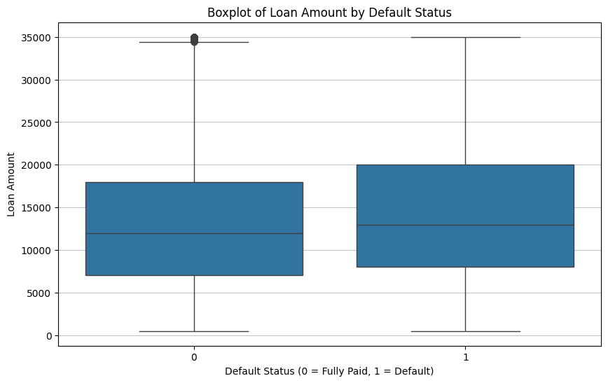
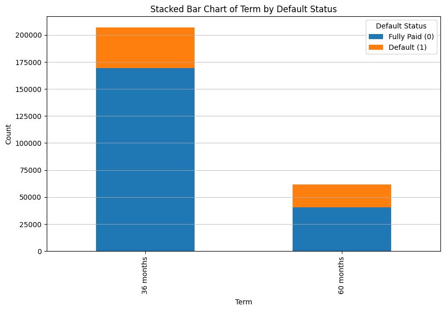
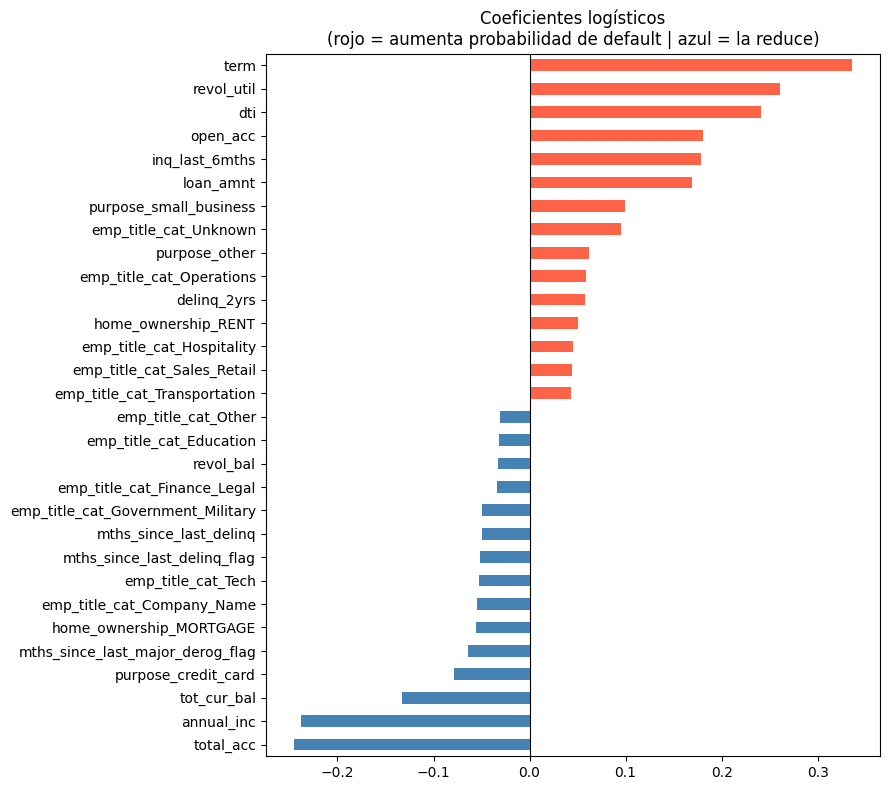

Delimitacion del Problema
El problema central de este proyecto consiste en la prediccion del riesgo de credito para solicitantes de prestamos. En el sector financiero, la capacidad de identificar que clientes tienen una alta probabilidad de incumplimiento (default) es critica para mantener la salud de la cartera y minimizar las perdidas crediticias.
Alcance del Proyecto
- Variable Objetivo: Se define un problema de clasificacion binaria donde la etiqueta
y = 1representa un evento de default (incumplimiento) yy = 0representa un pago exitoso (Current o Fully Paid). - Restricciones de Negocio: Para que el modelo sea util en un escenario real de "pre-aprobacion", se excluyeron todas las variables que se generan despues de que el prestamo es otorgado (como los intereses ya pagados o el estado actual de la deuda), evitando asi el sesgo de fuga de datos (Data Leakage).
- Poblacion: El modelo utiliza datos historicos de casi 900.000 registros, procesando perfiles socioeconomicos, historial crediticio y caracteristicas de la solicitud de prestamo.
Metodologia Planteada
Para resolver este problema, se siguio una metodologia basada en el estandar de la industria, estructurada en las siguientes fases:
Fase A: Ingenieria y Preparacion de Datos
Se implemento un pipeline de transformacion que incluyo:
- Limpieza Dimensional: Reduccion de 68 variables originales a ~66 caracteristicas finales tras la aplicacion de One-Hot Encoding (OHE).
- Tratamiento de Nulos: Uso de Flags Centinela para capturar la ausencia de datos en variables criticas (como meses desde el ultimo retraso) y la imputacion por la mediana para el resto de valores numericos.
- Normalizacion: Aplicacion de un StandardScaler para asegurar que las variables con diferentes magnitudes (como
annual_incvsdti) tengan el mismo peso en el entrenamiento de la red neuronal.
Fase B: Arquitectura de Modelamiento
Se opto por un enfoque de comparacion entre dos paradigmas:
Este modelo sirve como punto de partida para evaluar la linealidad del problema y proporcionar una base de interpretabilidad. Ampliamente aceptada en el sector bancario para la creacion de scorecards tradicionales.
Baja complejidad · Alta interpretabilidadImplementada en PyTorch. La arquitectura consta de una capa de entrada de 66 neuronas, capas ocultas densas con activacion ReLU para capturar relaciones no lineales, y una capa de salida con activacion Sigmoide para generar la probabilidad de default.
Alta complejidad · Captura no linealidadesFase C: Calibracion Financiera (Scorecard)
Para transformar la probabilidad matematica p en una herramienta de decision bancaria, se implemento una funcion de Scorecard. Esta utiliza una transformacion logaritmica de los odds (posibilidades) para asignar un puntaje (Score) en una escala de 300 a 850 puntos. La logica se rige por la formula:
Score = Offset + Factor * ln((1 - p) / p)
Fase D: Implementacion y Caso de Uso
Finalmente, la metodologia concluye con la creacion de una aplicacion web (Beta) en Streamlit. Esta permite la inferencia en tiempo real, donde un analista puede ingresar datos de un cliente y recibir instantaneamente la probabilidad de impago y el puntaje de credito sugerido.
Analisis Descriptivo y Hallazgos
Tras el analisis de la muestra (N = 268.530), se identificaron diferencias significativas entre los clientes con cumplimiento de pago (n = 209.711) y aquellos en estado de default (n = 58.819).
Figura 1: Monto del Prestamo vs. Default
Veamos un diagrama de cajas que relaciona la variable loan_amnt (cantidad solicitada por el prestatario) con el estado de Default:

Figura 1. Representacion visual del desbalance de clases (Default vs. Loan amount) en el dataset original. PDF · L79
Hipotesis 1: A Mayor Cuantia, Mayor Riesgo
El monto promedio solicitado por clientes en default es superior ($14.704) al de clientes con buen comportamiento ($13.303).
A mayor cuantia del capital solicitado, mayor es la presion financiera sobre el flujo de caja del prestatario, elevando el riesgo de impago. Este patron sugiere que los prestamos de mayor valor requieren un escrutinio adicional en el proceso de evaluacion.
Figura 2: Plazo del Prestamo vs. Default
Ahora veamos un diagrama de barras que relaciona la variable term (plazo del prestamo) con la cantidad de incidencias de impago:

Figura 2. Representacion visual del desbalance de clases (Default vs. term en el dataset original.) PDF · L87
Hipotesis 2: El Plazo Multiplica el Riesgo
El riesgo de default se duplica en plazos de 60 meses: aproximadamente 16% en 36 meses (32k de 200k) vs. casi 39% en 60 meses (26.6k de 68k).
El riesgo de credito no es lineal respecto al tiempo; plazos extendidos diluyen el compromiso de pago y aumentan la probabilidad de eventos disruptivos. Los prestamos a 60 meses actuan como un multiplicador de la probabilidad de default, posiblemente porque exponen al prestatario a mas ciclos de incertidumbre economica.
Desarrollo de Modelos
Para la resolucion del problema de clasificacion, se opto por una estrategia de comparacion de modelos. Ambos fueron evaluados utilizando un conjunto de prueba equivalente al 20% de los datos totales. Se utilizaron metricas de Accuracy, Precision, Recall y AUC-ROC para comparar su capacidad de discriminacion.
Recall alto (0.63): Detecta la mayoria de los defaults. Ideal cuando el costo de un impago es extremadamente alto. Genera mas "falsas alarmas" — clasifica como default a gente que en realidad pagaria.
Precision alta (0.43): Cuando alerta de default, tiene mayor probabilidad de acertar. Ideal para no molestar a clientes buenos con procesos de cobranza. Se le escapan mas casos reales de default.
Analisis de Resultados
A continuacion, veamos el desempeno de cada modelo:
| Metrica | Regresion Logistica (Modelo Base) | Red Neuronal (Modelo Avanzado) | Ganador |
|---|---|---|---|
| Accuracy (Exactitud global) | 0.65 | 0.75 | RN |
| ROC - AUC | 0.6896 | 0.6989 | RN |
| Precision (Clase 1 - Default) | 0.34 | 0.43 | RN |
| Recall (Clase 1 - Default) | 0.63 | 0.36 | RL |
| F1-Score (Clase 1 - Default) | 0.44 | 0.39 | RL |
Tabla 1. Comparativa de rendimiento entre el modelo base (Regresion Logistica) y el propuesto (Red Neuronal Torch). PDF · L141-142
Comportamiento de los Modelos
Como se puede observar en la tabla, el balance entre Falsos Positivos y Falsos Negativos es la diferencia mas importante ya que los modelos tienen comportamientos opuestos:
La red neuronal tiende a ser conservadora, tiene una precision mas alta (0.43), lo que significa que cuando dice que alguien entrara en default, es mas probable que tenga razon, sin embargo debido a su bajo recall, se le escapan muchos casos de default.
La regresion logistica tiende a ser mas agresiva, tiene un recall mucho mas alto, por lo que es mucho mejor para detectar a las personas que entraran en default. Todo esto al costo de tener una precision baja (0.34), es decir, genera muchos "falsos alarmistas" (clasifica como default a gente que no lo es).
Capacidad de Discriminacion (AUC-ROC)
Ambos modelos tienen un AUC muy similar (alrededor de 0.69). Esto indica que, a nivel general, ninguno de los dos es excepcionalmente bueno separando las clases; estan apenas por encima de un modelo aleatorio (0.5) y lejos de un modelo ideal (1.0). La Red Neuronal es ligeramente superior, pero la diferencia es insignificante.
La Red Neuronal tiene una exactitud mayor (75% vs 65%), pero esto puede ser enganoso. Como hay muchos mas casos de "No Default" que de "Default", la Red Neuronal infla su exactitud simplemente siendo muy buena prediciendo a los que no fallan, mientras falla mucho en los que si fallan.
Figura 3: Importancia de Variables
A continuacion, veremos una lista que compara como todas las variables aumentan la probabilidad de default:

Figura 3. Importancia de las variables y su impacto positivo/negativo en el riesgo segun el modelo lineal. PDF · L174-175
Para validar la interpretabilidad del modelo, se analizaron los coeficientes de la Regresion Logistica. Los resultados nos muestran que variables como la tasa de interes y la ratio deuda-ingreso (dti) son los principales predictores de riesgo. Este analisis es consistente con la teoria de riesgo crediticio tradicional, donde la carga de la deuda sobre el flujo de caja disponible determina la capacidad de cumplimiento.
El modelo confirma que los ingresos anuales (annual_inc) son el mayor contrapeso natural a la deuda, reforzando principios establecidos de la banca tradicional.
Escenarios de Negocio
Basado en estos datos se podrian plantear 2 escenarios:
El costo de un impago es altisimo. Se recomienda la Regresion Logistica. Aunque de mas falsas alarmas, detecta mucha mas gente en riesgo.
El costo de perder un cliente bueno por error es altisimo. Se elige la Red Neuronal. Es mas precisa en sus alertas, aunque dejara pasar a mas gente que entrara en default.
Aprendizajes del Proceso de Modelamiento
A lo largo de las etapas de preprocesamiento, entrenamiento y validacion del modelo de riesgo, se generaron los siguientes aprendizajes tecnicos y de negocio:
I. Sobre la Naturaleza del Riesgo (Insights de Negocio)
- El factor tiempo es determinante: Se aprendio que el plazo del prestamo (
term) no es solo una variable de pago, sino el predictor de riesgo mas agresivo. Los prestamos a 60 meses actuan como un multiplicador de la probabilidad de default, posiblemente porque exponen al prestatario a mas ciclos de incertidumbre economica. - Los ingresos son determinantes: Los ingresos anuales (
annual_inc) son el mayor contrapeso natural a la deuda. - El silencio de los datos es informacion: El tratamiento de los valores nulos mediante Flags Centinela (ej.
mths_since_last_delinq) revelo que la ausencia de un registro de mora es, en si misma, una de las senales de mayor calidad crediticia, y no debe tratarse simplemente como un dato faltante.
II. Sobre la Tecnica de Modelado (Machine Learning)
- Distintos casos de uso: Se aprendio que aunque ambos modelos tienen una capacidad de discriminacion similar, cada uno se "especializa" en un escenario especifico.
- Fuga de datos (Data Leakage): El aprendizaje mas critico en la fase inicial fue la importancia de filtrar variables "post-aprobacion". Incluir informacion sobre intereses pagados o estados de cuenta actuales habria inflado artificialmente el exito del modelo, volviendolo inutil para aplicaciones en tiempo real.
III. Sobre la Implementacion (Scorecard y App)
- Probabilidad vs. Puntaje: Se aprendio que la probabilidad matematica pura (0.0 a 1.0) es dificil de digerir para el usuario final. La implementacion de la Scorecard (escala 300-850) fue esencial para transformar un output estadistico en una herramienta de decision de negocio intuitiva.
- Calibracion de la Scorecard: Ajustar el factor y el offset permitio alinear el modelo con los estandares bancarios tradicionales, demostrando que el modelador debe ser el puente entre la ciencia de datos y las necesidades del mundo real.
Caso de Uso: RiskScore AI — Sistema de Apoyo a la Decision
Para tangibilizar los resultados del modelo, se desarrollo la aplicacion RiskScore AI, una plataforma web disenada para ser utilizada por analistas de credito en entidades financieras o plataformas Fintech. El caso de uso se centra en la evaluacion inmediata de solicitudes de prestamo.
Ademas del uso institucional, la aplicacion RiskScore AI esta disenada como una herramienta de "Autoservicio" (Self-service) para el usuario final (el solicitante). Este caso de uso se enfoca en la transparencia financiera y la preparacion previa a una solicitud formal de credito.
Escenarios de Aplicacion
Cuando un cliente solicita un credito a traves de la plataforma, el analista de riesgo no necesita interpretar complejas probabilidades matematicas. En su lugar, ingresa el perfil socioeconomico del solicitante en la interfaz de RiskScore AI.
Un usuario comun, antes de someterse a un proceso formal (el cual suele implicar una consulta a las centrales de riesgo que puede afectar su historial), utiliza la pagina web para realizar una simulacion privada. Esto le permite entender como lo percibe un algoritmo de Inteligencia Artificial.
Flujo de Operacion
Sistema de Semaforos de Riesgo
El sistema entrega un diagnostico visual mediante tres categorias de riesgo claramente diferenciadas:
Valor Agregado para el Negocio
Velocidad: Reduce el tiempo de respuesta de dias a segundos. Consistencia: Elimina el sesgo humano en la evaluacion inicial, aplicando los mismos criterios tecnicos a todos los solicitantes.
Recursos del Proyecto
Para facilitar la evaluacion y reproducibilidad de este proyecto, ponemos a disposicion los siguientes recursos externos. Visita nuestro repositorio para acceder a los cuadernos de Jupyter, modelos entrenados (.pth) y el codigo fuente de la aplicacion, o mira nuestro video explicativo del Caso de Uso.
Contribuciones Individuales
El presente proyecto fue desarrollado de forma colaborativa. A continuacion, se detallan los aportes de cada integrante del equipo:
| Nombre del Integrante | Contribucion Principal |
|---|---|
| Daniel Felipe Garzon Acosta | Analisis, limpiado y seleccion de caracteristicas del dataset; Entrenamiento del modelo con regresion lineal y red neuronal |
| Juan Felipe Moreno Ruiz | Entrenamiento del modelo con regresion lineal y red neuronal; Edicion del video publicitario |
| Jhanuar Castro Lopez | Realizado de la pagina web y la documentacion |
Tabla 2. Matriz de responsabilidades y contribuciones del equipo de trabajo. PDF · L288
Prompts Principales Utilizados
A lo largo del desarrollo con asistencia de Inteligencia Artificial, se iteraron diferentes prompts para la generacion de codigo y resolucion de bugs. A continuacion, se destacan los mas relevantes:
Bibliografia
- LendingClub. (2020). Credit Risk Dataset. Kaggle. Recuperado de https://www.kaggle.com/datasets/ranadeep/credit-risk-dataset
- Paszke, A., et al. (2019). PyTorch: An Imperative Style, High-Performance Deep Learning Library. En Advances in Neural Information Processing Systems 32. Curran Associates, Inc.
- Siddiqi, N. (2012). Credit Risk Scorecards: Developing and Implementing Intelligent Credit Scoring. John Wiley & Sons.
- Pedregosa, F., et al. (2011). Scikit-learn: Machine Learning in Python. Journal of Machine Learning Research, 12, 2825-2830.